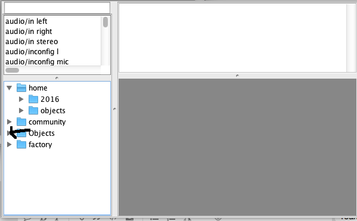

Sorry for noob question, but what does:
actually mean?
Thanks 

'in development' environment
specifically, it means I've committed it to my own github repository and issued a pull request (to the main axoloti repo).
at some point (usually fairly quickly) Johannes will then 'accept the pull request' and merge it into the main axoloi repo.(you can see on the main axoloti repo, if this has been done yet or not)
at this point anyone building against the master branch of axoloti will see (and be able to test) the change.
then much later when Johannes considers its ready, a release will be made, which is a binary build for users to install.
ok, to avoid this, I insist the user closes object editors before they 'go live'
unfortunately the editor doesn't know the patch is live, so we cannot stop applying changes, and the process of applying changes, makes significant changes to the object in the patch... so we cannot yet deal with this.
perhaps in the future the whole not editing whilst live could be reviewed... I believe its due to trying to maintain a consistent view between the running patch and the editor... perhaps once we get a presentation view this might be less necessary...
Hey
Have been looking a bit more into the issues regarding red subpatches and red custom objects in 1.09. It seems like I cant get 1.09 to load custom objects or subpatches, even though I use exactly the same folders as in 1.06. For example i use:
/objects/
/subs/
(in the root of hard disc)
... for different things like subpatches and custom objects. And even though I link to the exact same folders that works in 1.06, they show up as red subpatches/custom objects. I know @thetechnobear have fixed so it is possible to change the objects to right version manuallay. But actually it would be much better to actually be able to link to the right folders so they dont show up red in the first place. I have been trying to find out how to set this up for a few days and Axoloti still doesnt recognise those folders and doesnt load the objects as supposed.
@thetechnobear do you know if the linking to folders so the subpatches and custom objects show up right is also fixed with the update you made to github or is it only the abillity to replace subpatches that has been fixed?
Had to go back to 1.06 again because if this.
(sorry if ths sounds like gibberish. Had a bit hard time explaining it).
Thanks
As I said before , you should be able to create libraries, such that objects,/subpatches are found i.e. There is no reason to substitute ... which is never the preferred solution.
The only change made to the current dev version is to allow zombie objects to be replaced.
I've no plans to make any further changes in this area, as I'm not aware of any issues.
If you think you have found a bug , you need to report with precise details and examples.
I advise you to do this, as 1.0.10 will hopefully replace 1.0.6 as the released version.
Yeah I do understand the libraries a little bit. And I think I got it partially sorted. I found out that Axoloti needs to have the folders not in home folder, but in the same "folder level" as factory folder and community folder. The one with the arrow pointing at it, I managed to get working
And I am not sure how to do that.

EDIT:
I think I figured something out that may play a role in the above issue. It seems like Axoloti automatically adds a /objects/ to any folder you add to the library. So for example a folder called /subs/ will actually be names /subs/objects/. So Axoloti is looking it the wrong place for the folder. See this picture. In the talkback window, last entry line, Axoloti has added the /objects/ which is not specified in the library menu on the right. :
Is this how it is supposed to work?
Thanks
Ok, got it working. I had to take all the files and put them into a manually created folder inside /subs/. I created the /objects/ so there now was a folder called /subs/objects/.
That worked
I think it was that I had to create the /objects/ manually that was confushing.
How do you guys get those nicely named folders in the object browser? All the top level folders are called "objects" here.
Or esle here is how I have set it up now:
As I understand how it works now, is that you for example create a folder called /subs/ ....... and inside that folder you create a folder called /objects/. So you have /subs/objects/. And inside that folder you put your objects. But in the lirbrary menu you have to put the filepatch reference for /subs/ NOT for /subs/objects/.
I give them same ID tag as the foldername:
I do that too; the library config looks the same as yours. I seem to remember that there were "Home", "Factory" etc. in my first 1.0.6 install. Since then I've done a few installs with an empty Documents/Axoloti folder and get multiple "objects" folders every time. Running Windows 7 64bit. This may not be a 1.0.9 issue, so perhaps I should post in Helpdesk instead(?)
I am on mac Yosemite.
The home folder I just noticed will only show up if you put something inside it. I just emptied mine and copied the content to another location and reloaded objects and then the home folder didnt show in the object browser anymore. If you put something inside the objects folder in documents/Axoloti/objects/ I am pretty sure home folder will show again.
This is another topic:
I also just noticed that sometimes when I am loading a patch from 1.06 with a mix/mix 2 s-rate version...... The mixer is instead loaded as mix/mix 2 k-rate version. Anyway small issue.
Id need a specific example... provide me with a patch with just the mix 2-rate object in it created from 1.0.6, that in 1.09 gets substituted incorrectly.
from 1.0.8 onwards, all this incorrect substitution becomes a thing of the past, as every object has a unique id (uuid), so its impossible for it to load the wrong thing... due to this, Im not willing (perhaps johannes might) to spend too much time dealing with this transition from 1.0.6 to 1.08+
... its just not worth my dev time for a one off operation - of course, its possible you may be able to convince someone else to do it.
the object browser, shows directories with objects in it... if there empty they wont exist.
It all changed from in 1.07+ , due to libraries.
(in 1.0.6, it shows objects in the browser, as you describe)
the name shown now is the library name...
if 'objects' is showing up, I suspect your libraries are not set correctly.
... if you delete the axolotl-factory and community folder, do these display correctly.
we basically look for local library folder/ objects, and then if we match, we use the library id.
I don't have windows 7, so cant see if its anything specific, but I doubt it...
as it works on windows 10
just added (in dev) the ability to have a versioned axoloti home directory,
so from 1.0.10 you will be able to run different versions of axoloti side by side.
I have pointed this out, I think in the videos and elsewhere quite a few times, a library has a structure..
this can be clearly seen in the community and factory libraries
lib dir
|
|----- objects
| |---- your objects
|
|------patches
| |---- your patchesand specifically the community library has the structure
com lib dir
|
|----- objects
| |------- contrib prefix
| |---- your objects
|
|------patches
| |------- contrib prefix
| |---- your patches(this may be extended in the future, e.g. to have a resources and firmware subdirectory)
sub-patches (AXS files) ,
IF your using subpatches 'as objects' (i.e they are global, and used be on your search path) then they go in objects.
IF your sub-patches are referenced with respect to patch, they go in the patches directory
the former case, is because we use sub patches in two ways... the first is an easy way to create utility objects for end users you dont want to create custom objects in C. the second is as a way to modularise patches. this is described in the user guide, and provides recommendations on usage.
If I just delete the directories I get errors for missing directories and files. If I also delete axoloti.prefs it rights itself.
The main differences in the old and new axoloti.prefs are that the newly generated one has the paths in the < LocalLocation > sections prefixed with "C:". I tried to remove the "C:"s, and then I got "objects" as object browser folder names again, so that's the culprit. Some kind of bugette/featurette there then(?)
It's much nicer with the actual lib names - thanks!
ah yeah, sorry, deleting is not enough.... you can then use preferences reset, , in fact preferences->reset all is the best way
yes, the local directories are required to be a full directory name including drive, as they could be on a different drive.
of course, if you select, using the 'select' button, then it should have done this for you - no?
did you manually, type in the path? or edit the preferences file?
I don't think you can get into this state, if you use the UI to select the directories etc.
I guess I could force users to specify the directory by using the 'select' button... that would force the format to be correct.... or recheck it, when its changed on the preferences.

{kind=link}
{kind=link}